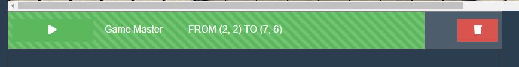
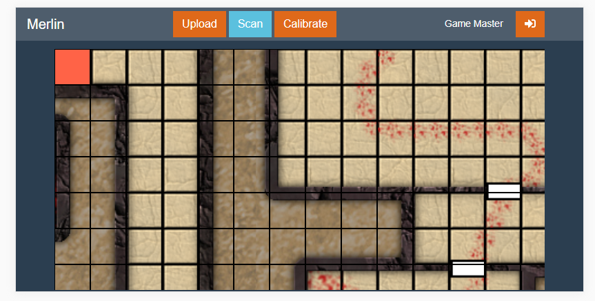
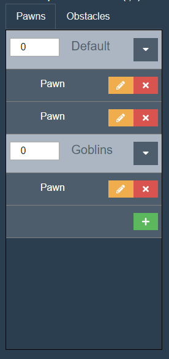
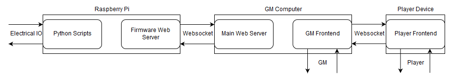
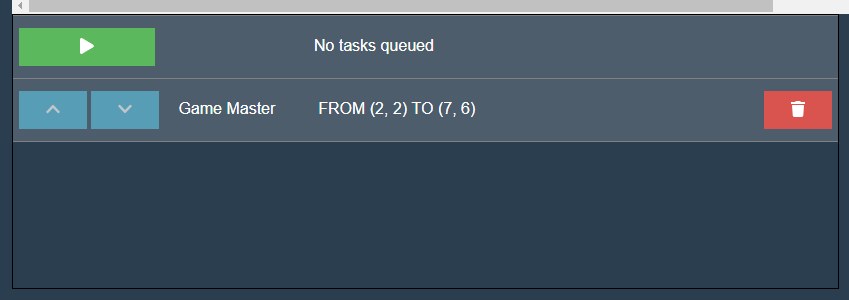

Progress Updates
Software Update 6: 9 Mar 2019
The number of tests has grown greatly over the past week as the other systems have really come together. The one piece of firmware that has probably grown the most is the core movement algorithm, which now implements a fancy control algorithm in order to achieve maximum possible accuracy in moves. The limit switches, motors and encoders have all been tested extensively. The movement, calibration and scanning scripts are all in place and seem to work fairly well, although they could use some minor improvements. The scanning is yet to be tested as the electrical system still needs to be put in place. In order to accomodate this, regular pawns can now be manually added.
Software Update 5: 2 Mar 2019
As the hardware and electrical approach a state where testing can actually begin, it has become important to prepare firmware scripts and tests in order to determine system parameters and any tweaks that may have to be made to the software in order to accomodate inaccuracies in the other systems. A new software repository was started in order to house the new testing scripts that will be used and a great deal of progress was made on writing firmware. Testing should begin soon and with it great pain.
Software Update 4: 23 Feb 2019
Mostly a slow week, but loading bars are now implemented end-to-end so that they will update based on the current progress of the current running task.
Software Update 3: 16 Feb 2019
The most major update for this week is the addition of the specific user interface for players. This view is like the old interface stripped of all of the 'extra' information, so that there is only the interface for adding moves. This interface is also a lot cleaner on mobile, which is optimal for players who may not always bring a device with a large screen to gaming nights. The new interface is shown in its mobile layout form, below.
Another more minor update is that pawns are now seperated more cleanly in th user interface based on if they are obstacles or not. The user interface also now supports groups, which are a way of organizing pawns. These changes are purely for increasing the user experience, although they may create a groundwork for future improvements.
Software Update 2: 9 Feb 2019
The main software this week was the refactoring of the backend so that the load on the pi was reduced. The backend used to be a single web server which resided on the pi and managed all of the core software functionality. Now, the backend has been split into two web servers. The pi has a very simple web server which is only focused on passing move information to the table firmware. All of the more complicated functionality is now in a web server designed to run on a computer. Thus, the load on the pi will be greatly reduced. The new sofware architecture is shown below, although it also shows the plans for divided interfaces for players and GMs.
The next update to the software is the addition of a header to the user interface. In addition to this looking visually better, it provides a space for some more functionality. Specifically, the frontend now allows the user to input a username which will be saved across multiple sessions. This username will be used to tag their moves so that the GM can track where different moves come from. This is the first step towards an actual user management architecture, although that is probably out of scope for this project.
Software Update 1: 2 Feb 2019

The software has made a great deal of progress since the beginning of the project. Much of the user interface software and main functionality is done, just leaving the hardware communication layer for later development and testing. Above is shown an overview of the user interface as it appears currently. All buttons and interfaces are fully functional to a firmware level, except for scanning which will come later. Currently users can click on the main canvas area of the application in order to add new tasks to the task queue. Simply clicking two squares one after another will result in the table moving from one square to another.
This shows the task queue, where the list of movements to be done by the table are listed and updated over time as they are completed. The user will have the ability to pause the current task, remove tasks from the queue and reorder tasks which are not currently playing.
Macros were originally a desired but non essential feature, but they are currently implemented in the current software version! Macros allow for the user to go into an edit mode and add a group of tasks, then save them as a Macro. At a later time a Macro can be deployed in order to automatically queue the group of moves that were predefined for it. Time permitting, this could be greatly improved upon in the future.
Part of this project involves displaying images on the tabletop. In order to accomodate this, users can now upload their own images yo manually set the table background. This also updates the background of the canvas in the software so that the user will be able to more easily move between the app and the tabletop.
Future Work
The most major update planned for the near future focuses on improving the performance of the server code on the raspberry pi, as it is currently struggling under the heavy load. The current proposed solution is to switch the pi so that it is only running a simple server so that the main server can run in a more robust environment and only exchange simple data with the pi.
Work is also being done to improve the user interface in several small ways. Such as: Different views for players and the game master, loading bars for playing tasks and a better mobile layout.
Hardware Update 1: 1 Feb 2019
Hardware
- Major gantry frame is almost complete
- Base of the table structure is complete
- Some mounting features have been redesigned due to material reselection
- Overall height and dimensions of the table have been reduced for more comfortable play and viewing the projected image
Electrical
- Electromagnet control method has been revised to reduce power consumption
- All other components have been received and ready to put together